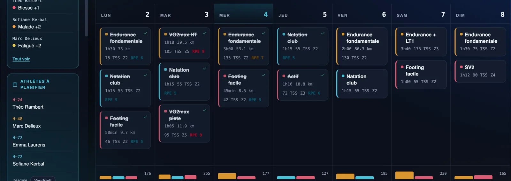
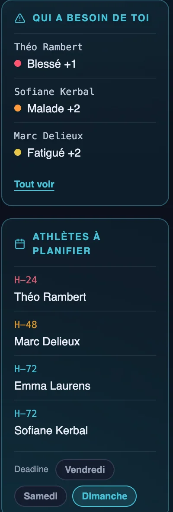
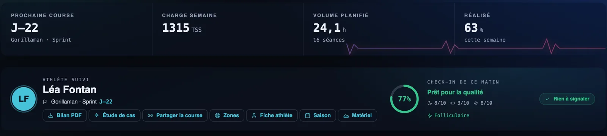
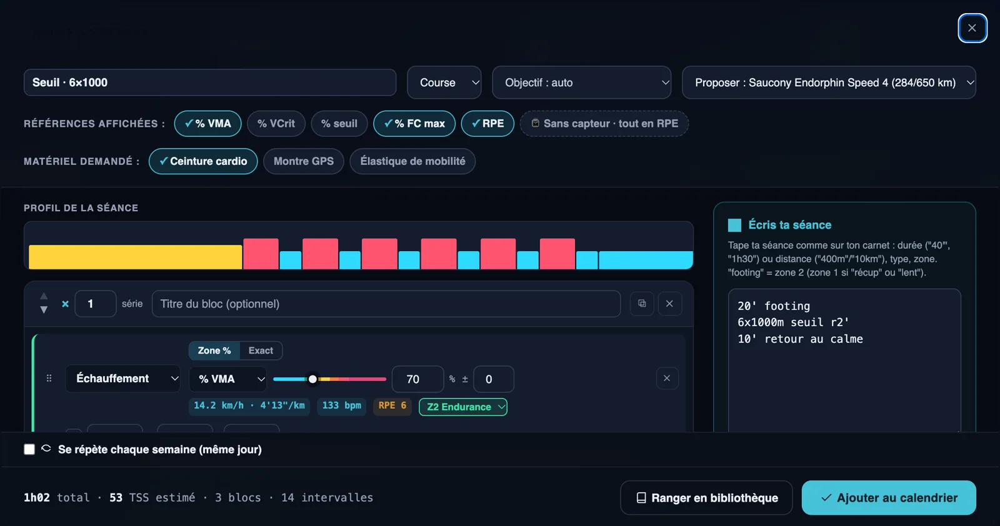
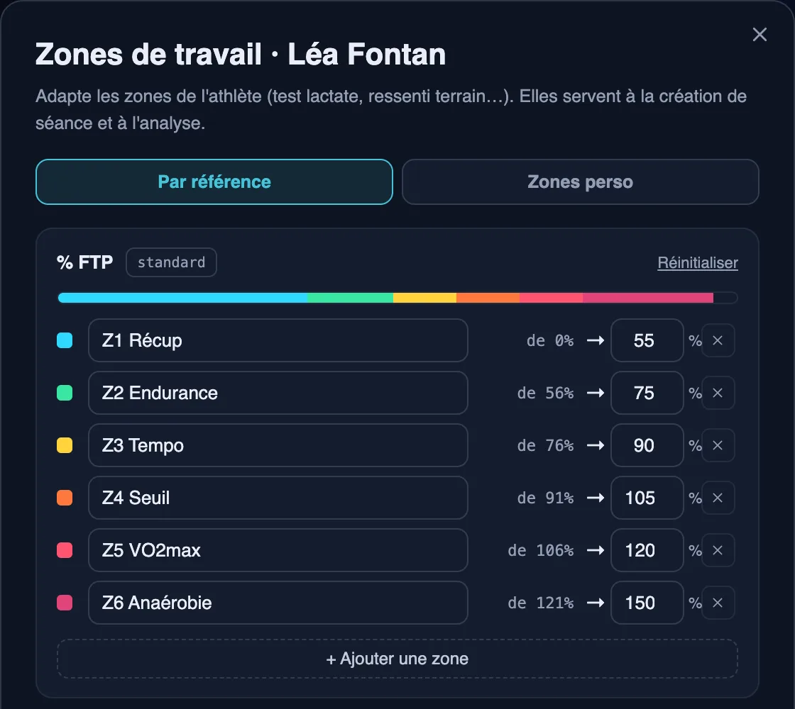

Le logiciel des coachs de triathlon indépendants
Planifie la semaine de chaque athlète, envoie les séances sur sa montre, lis son état de forme chaque matin et sache tout de suite qui a besoin de toi. Moins d'heures sur l'organisation, plus de temps pour coacher.
Sans carte bancaire · Triathlon, course à pied, natation, vélo · Dès 19 €/mois

Tes athlètes ne s'entraînent pas tous la même semaine
Coacher dix ou trente triathlètes, c'est dix ou trente plannings, des blessures, des semaines chargées au travail, des montres différentes. Sillance garde le fil pour toi.
Planifier plus vite
Une séance écrite en quelques lignes, des allures calculées pour chaque athlète, une semaine copiée en un clic.
Ne rater personne
Les athlètes blessés, fatigués, qui manquent des séances ou dont la semaine prochaine est vide remontent d'eux-mêmes.
Un suivi pro
Séances sur la montre, état de forme du matin, bilan PDF : tes athlètes voient la différence.
Les athlètes à suivre en priorité, sans chercher
Chaque jour, Sillance fait remonter ceux qui ont besoin d'un message : blessure ou fatigue signalée au check-in, séances manquées, consigne non respectée, plus d'activité depuis plusieurs jours.
- Les athlètes dont la semaine prochaine n'est pas encore planifiée, avec ton échéance.
- Un élément traité disparaît, sur tous tes appareils.

L'état de forme de chaque athlète, avant la séance
Chaque matin, l'athlète renseigne son sommeil, ses jambes et sa motivation. Avec sa VFC et sa récupération lorsqu'il a une montre COROS, tu sais s'il est prêt pour la séance de qualité ou s'il vaut mieux l'alléger.

Une séance en quelques lignes, sur la montre de l'athlète
Écris « 3x10' seuil r5' » ou « 8x100m seuil crawl départ 1'50 » : la séance se construit avec les cibles de chaque athlète, en % de FTP, de VMA ou de CSS, puis part sur sa montre.
- Envoi direct sur COROS, fichier .FIT pour Garmin.
- Matériel demandé par la séance et paire de baskets proposée.
- Séances récurrentes et copie d'une semaine entière.

Les zones de chaque athlète, pas des zones génériques
Adapte les zones de chaque athlète à son test lactate ou à ton ressenti terrain : % FTP, % PMA, % VMA, % CSS, fréquence cardiaque. Ses séances et ses analyses utilisent ses propres zones. Outils gratuits : zones FTP, allures VMA, CSS natation.

Tout ton coaching, au même endroit
Encaissement
Connecte ton compte Stripe : tes athlètes paient leur suivi en ligne, factures automatiques.
Rappel du matin
Chaque athlète reçoit sa séance du jour et le matériel à prévoir.
Bilan PDF
Un bilan clair à partager avec ton athlète.
Messagerie
Échange avec chaque athlète directement dans l'application.
Un prix qui suit ton nombre d'athlètes
Coach
Coach
Coach
Essai gratuit de 14 jours, sans carte bancaire. Tu entraînes dans un club ? Voir le logiciel pour club de triathlon et le logiciel pour run club.
Les questions des coachs
Je coache mes athlètes à distance. Comment je vois ce qu'ils ont réellement fait ?
Les activités remontent automatiquement depuis les montres COROS. L'athlète peut aussi importer ses fichiers .FIT, .TCX ou .GPX depuis n'importe quelle montre. Tu vois la séance prévue et la séance réalisée côte à côte.
Pourquoi pas simplement Strava ?
Depuis novembre 2024, Strava ne partage plus les données d'un athlète avec un service tiers utilisé par son coach. La synchronisation par la montre est devenue le moyen fiable de suivre ce que font tes athlètes.
Combien coûte Sillance pour un coach ?
19 € par mois de 1 à 10 athlètes, 29 € de 11 à 30 athlètes, 49 € au-delà de 30. Essai gratuit de 14 jours, sans carte bancaire.
Mes athlètes doivent-ils payer ou installer quelque chose ?
Non. Sillance fonctionne dans le navigateur, sur ordinateur comme sur téléphone. L'athlète crée son accès gratuitement depuis ton invitation et connecte sa montre une fois.
Puis-je encaisser mes athlètes avec Sillance ?
Oui. Tu connectes ton compte Stripe, tu fixes tes offres, et tes athlètes paient leur suivi en ligne. Les factures sont générées automatiquement à chaque échéance.
Pour toi et tes athlètes
Essaie Sillance avec tes athlètes
14 jours gratuits, sans carte bancaire. Ou explore d'abord la démo, sans inscription.